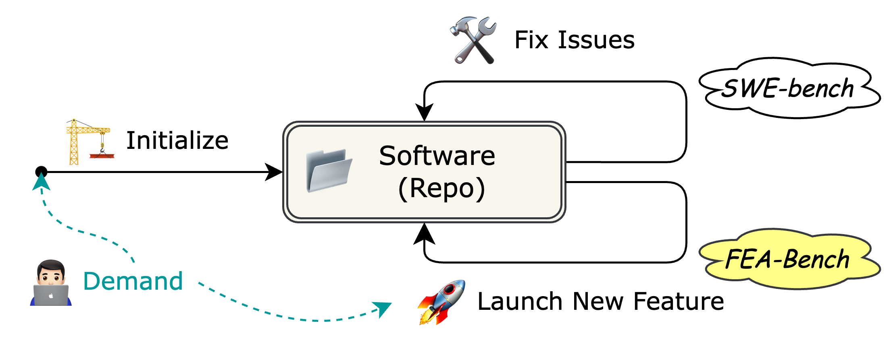
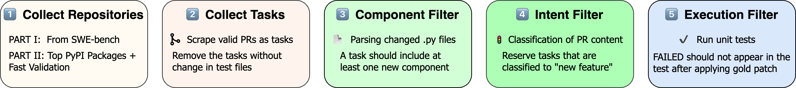

Overview
FEA-bench tests AI systems' ability to implement new features in the Github repositories.

We collect 1,401 task instances by crawling Pull Requests from 83 popular Python repositories. Each instance is based on a pull request that
- modified 1+ testing related files
- have newly implemented components (function/class)
- with a general purpose of implement a new feature

Per instance, we construct an execution environment (Docker Image) with the repository successfully installed at the commit that the Pull Request is based on, following SWE-bench. Without the Pull Request's changes, a number of test(s) fail. After the Pull Request is merged, the same set of test(s) pass. These "Fail-to-Pass" tests are the primary signal for evaluation.
FEA-bench evaluation works as follows. Per task instance, an AI system is given the request text of a new feature, and the positions and specified names of new components. The AI system should then modify the codebase in order to implement new feature. When the AI system is finished, we run the aforementioned Fail-to-Pass tests to check if the new feature was successfully implemented.
FEA-bench was released in April 2025, where our initial Retrieval Augmented Generation (RAG) using BM25 scored just 10.49% by DeepSeek-R1. And the Agentless, designed for bug fix, only scored 14.0% on FEA-Bench Lite.
Resources
We provide the basic data for the FEA-Bench test set in the huggingface.
⚠️ Due to licensing and company policies, we cannot release the full dataset in the huggingface. Our published version only includes essential attributes, and the remaining content needs to be scraped from GitHub, by the provided code in the FEA-Bench official repository.
Citation
If you use FEA-bench in your research, please cite our paper:
@inproceedings{li-etal-2025-fea,
title = "{FEA}-Bench: A Benchmark for Evaluating Repository-Level Code Generation for Feature Implementation",
author = "Li, Wei and
Zhang, Xin and
Guo, Zhongxin and
Mao, Shaoguang and
Luo, Wen and
Peng, Guangyue and
Huang, Yangyu and
Wang, Houfeng and
Li, Scarlett",
editor = "Che, Wanxiang and
Nabende, Joyce and
Shutova, Ekaterina and
Pilehvar, Mohammad Taher",
booktitle = "Proceedings of the 63rd Annual Meeting of the Association for Computational Linguistics (Volume 1: Long Papers)",
month = jul,
year = "2025",
address = "Vienna, Austria",
publisher = "Association for Computational Linguistics",
url = "https://aclanthology.org/2025.acl-long.839/",
pages = "17160--17176",
ISBN = "979-8-89176-251-0"
}